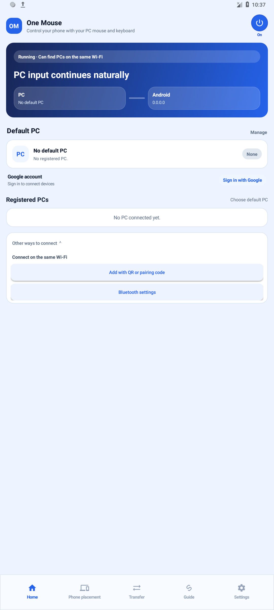
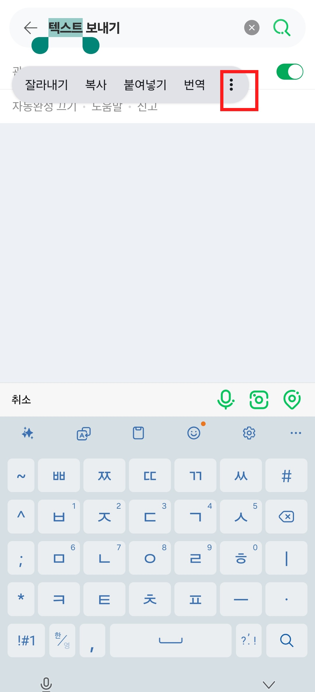
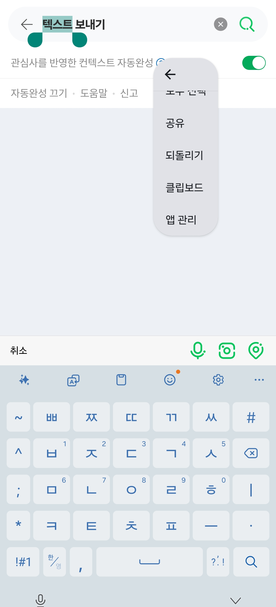
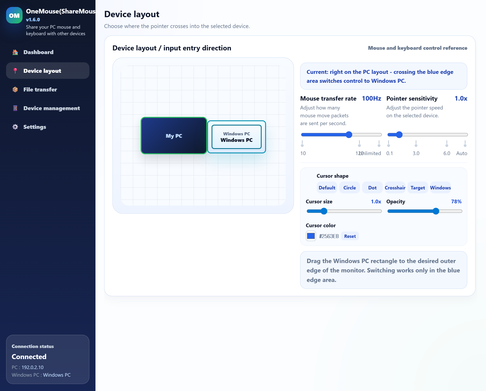

1. Pindahkan kursor
Geser satu jari untuk memindahkan pointer Angkat dan reposisi jari Anda untuk terus bergerak
Panduan
Kebanyakan orang hanya perlu mengikuti perintah ini, untuk rincian jaringan yang lebih sulit. Teknis & Keamanan, dan ketika sesuatu tidak bekerja, cek Bantuan terpisah.
Android setup
Pilih akun Google, pasangan QR / code pada Wi-Fi yang sama, atau Bluetooth. Ketiga metoda ini perlu aksesibilitas Android untuk mengendalikan ponsel Anda dengan mouse dan keyboard PC.
Temukan internet- perangkat yang terhubung dalam daftar akun. Tak ada kode QR atau pasangan yang diperlukan.
Akses Internet diperlukan. Apakah perangkat dapat menyambung bergantung pada jaringan. Pilih Wi-Fi atau Bluetooth untuk memakai OneMouse tanpa masuk.
Perangkat yang hilang dari akun Anda atau tak bisa menyambung?Tidak ada tanda Google -in dibutuhkan. PC dapat menggunakan kabel LAN selama terhubung ke router yang sama seperti telepon.
Jalankan OneMouse pada kedua perangkat. Buka Perangkat dalam aplikasi PC.
Aktifkan layanan di bawah Android Settings Aksesibilitas Otentikasi Aplikasi terpasang (atau Aplikasi Downloaded) Az OneMouse. Nama menu bervariasi dengan produsen. Juga periksa perizinan yang diperlukan untuk penemuan, seperti Perangkat Nearby Wi- Fi.
Dalam Perangkat, memperluas Cara lain untuk menyambung dan memilih QR & kode untuk PC ini. Dialog ini menunjukkan kode QR dan six-digit.
Pilih Rumah Saran Cara lain untuk menghubungkan Tambahkan dengan QR atau kode pasangan. Masukkan enam digit dalam Kode Nomor dan pilih Sambung, atau gunakan Pindai kode QR Buka untuk memindai QR PC. Pilih satu metode.
Konfirmasi bahwa PC muncul di bawah PC terdaftar pada layar telepon. Perangkat yang sudah terdaftar tidak perlu otentikasi ini setiap saat.
Cocok penempatan Telepon ke posisi sebenarnya telepon, kemudian memindahkan mouse melalui konfigurasi bagian masukan kursor Jika bagian itu sempit, coba di tengah-tengah tepi pertama.




Layar aplikasi yang sebenarnya ditangkap dengan perangkat contoh dan kode. Gunakan kode atau QR yang ditampilkan dalam aplikasi PC Anda sendiri ketika menyambung. Pilih sebuah gambar untuk melihatnya dengan ukuran penuh.
Bluetooth dalam beta. Tidak ada Wi- Fi, Google sign-in, kode QR, atau kode pasangan diperlukan.
Langkah-langkah ini untuk Windows WexAndroid. Bluetooth tidak membawa video jarak jauh. Untuk melihat layar PC pada ponsel Anda, gunakan Wi- Fi / LAN atau koneksi akun yang didukung.
Pengaturan Bluetooth dan langkah-langkah terrinci legacyIjin masukan: Android Settings Encessibility Aplikasi yang terpasang (atau Aplikasi Downloaded) Az OneMouse. Terhubung, tapi tetikus tidak akan menyeberang?
Posisi telepon
Seret setiap perangkat ke posisi sebenarnya dalam layar pengaturan. Lewati konfigurasi bagian masukan kursor di tepi korespondensi. Bagian ini mungkin mencakup hanya bagian dari tepi itu.

Remote control
In Devices, tap the remote control icon on the row of a pair Android, and a separate window opening showing the phone 's screen. The first time you open it, Android screen capture afception is needed.
Buka jendela dari ikon remote control-nya atau dengan bawaan Ctrl + Alt + Shift + 1 ~ 9. Benar-tombol menyeret bekerja dengan gesture ekstensi dikonfigurasi dalam target PC browser, terpisah dari Android gerakan.


Android Aida Windows
Lihat layar PC Anda, klik dengan sentuhan, pindahkan kursor dan ketik dengan keyboard telepon Anda. Baik PC dan Android perlu up- to-date aplikasi yang mendukung fitur ini.

Pilih kualitas gambar dan rate frame maksimum di panel kontrol. PC yang mendukung perubahan kualitas hidup berlaku mereka tanpa menghubungkan kembali. Resolusi aktual dan laju frame tergantung pada kinerja perangkat dan kondisi jaringan.
Untuk menyelesaikan, gunakan Panel kontrol (Control panel) DiputusMenonaktifkan remote control meninggalkan PC berjalan. koneksi Bluetooth tidak membawa video remote.
Animasi penjelasan ini menunjukkan dasar-dasar mode kursor. Ini bukan rekaman aplikasi.
Geser satu jari untuk memindahkan pointer Angkat dan reposisi jari Anda untuk terus bergerak
Pindahkan penunjuk atas tombol, kemudian tekan sekali. Klik terjadi di pointer, bukan di jari Anda.
Tempatkan penunjuk pada batang judul atau item dan terus jari Anda masih sampai pointer berubah biru. Pindahkan jari Anda ke drag, kemudian angkat untuk menjatuhkan item.
Pada 1 ×, geser dua jari bersama-sama untuk menggulung PC. Spread dua jari untuk zoom in; sekali diperbesar, bergerak mereka bersama-sama untuk pan tampilan.
Android mouse gesture
Cara mengaktifkan gerakan, tujuh pola stroke, dan batas dukungan.
In Settings Slipboard & clipboard, turn on Mouse gesture and choose the apps (off by default). Baik PC dan Android membutuhkan versi gesture-capable.
Pilih Semua aplikasi untuk menggunakan gerakan dalam aplikasi dan pada layar rumah. Periksa batas dukungan
Pindahkan penunjuk PC ke telepon Android atau tablet dan buka aplikasi yang dipilih.
Panah dan gauge vertikal menunjukkan arah dan intensitas gulungan berdasarkan panjang stroke, bukan posisi Anda pada halaman atau jarak yang tepat.
| Gerak | Aksi |
|---|---|
| ← | MundurGambar kiri untuk kembali ke halaman sebelumnya atau layar. |
| → | MajuGambar kanan untuk kembali ke halaman setelah kembali. |
| ↑ | GulungMenggambar dan melepaskan. |
| ↓ | Gulung ke bawahMenggambar ke bawah dan melepaskan. Lebih lama gulungan stroke lebih banyak; lebih sedikit gulungan stroke. |
| ↓ → | Minimalkan aplikasiPergi ke Rumah tanpa menutup aplikasi. |
| ↑ ↓ | Muat UlangSegarkan halaman dalam peramban yang didukung. |
| ↑ → | Aplikasi baru-baru IniBuka daftar recent- app untuk memilih aplikasi lain. |
Berkas & papan klip

Tangkap & kirim cuplikan layar
Tangkap PC Anda sendiri atau perangkat yang sedang Anda kendalikan. Salin atau simpan hasilnya dari pratinjau, atau kirim ke papan klip perangkat terhubung.
Bila Anda mengubah jalan pintas, gunakan tombol yang dikonfigurasi Anda. Saat memilih suatu wilayah, Esc atau Batal menutup pilihan tanpa mengirim gambar.

Mobile ke PC
Untuk transfer LAN, pilih PC baku on the mobile app 's home screen and check that it is pair and connected. Send files from the transfer tab or Android' s share menu, and send text through OneMouse to PC in the selection menu.
Dalam PC Pengaturan Transfer Berkas Umum Berkas: Lokasi berkas yang diterima, gunakan Ubah folder untuk memilih tujuan dan Buka folder Ini tersedia pada kedua PC utama dan sub.




Pemberitahuan & jawaban
Di aplikasi Android, aktifkan Kirim pemberitahuan ke PC, ijinkan akses pemberitahuan, dan pilih aplikasi untuk relay. Pada PC utama, aktifkan pemberitahuan perangkat dalam Pengaturan Notifikasi Lansekap.
Layar yang sama menunjukkan sejarah dan pengaturan penahanan. Lebih lanjut tentang pemberitahuan
Balas muncul ketika PC dan Android mendukung balasan dan pemberitahuan telepon asli menawarkan sebuah free-text jawaban. Ketikkan balasan dan pilih Kirim atau Ctrl + Enter untuk mengirim melalui aplikasi telepon asli (Enter Menambahkan garis istirahat).
Pintas angka
Dengan setidaknya dua perangkat LAN pada PC utama, pilih Urutan perangkat gledit. Seret handle atau gunakan string.change save secara otomatis, then choose Selesai. Koneksi dan remote-jendela jalan pintas nomor mengikuti urutan yang sama.
Bluetooth
Bluetooth dalam beta. Tidak ada Wi- Fi, Google sign-in, kode QR, atau kode pasangan diperlukan.
Windows Android Android dan Windows AiverWindows dapat bertukar masukan, papan klip, dan berkas secara langsung di Bluetooth.

PC lain


Mac
Instal DMG publik pada Mac, kemudian mulai dan mengelola koneksi LAN dari OneMouse pada Windows. Ikuti lima langkah ini.
Jalankan OneMouse pada Windows 10 / 11 dan Mac, dengan kedua komputer yang terhubung dengan WiFi atau LAN yang sama. Koneksi dimulai dan dikelola dari Windows.
Ijinkan Aksesibilitas sehingga Mac dapat melakukan masukan tetikus dan papan ketik diterima. Pada maOS 15 +, juga mengijinkan Jaringan Lokal untuk penemuan; macOS 13 / 14 mungkin tidak menampilkan item ini.
Buka Perangkat dalam aplikasi Windows dan pilih Mac yang terdeteksi.
Masukkan dalam Windows kode pasangan 6 digit yang ditampilkan oleh Mac, kemudian konfirmasi pasangan.
Tempatkan Mac di samping tampilan Windows di penyunting pengaturan. Pindahkan kursor ke ujung untuk mengendalikannya dan bertukar berkas dan isi papan klip di kedua arah.
Izin Perekaman Audio Layar & Sistem hanya diperlukan ketika Anda memilih untuk melihat atau mengontrol tampilan Mac dari Windows. OneMouse tidak menangkap audio sistem.
Mac Bluetooth tersedia sebagai beta: mengaktifkannya dalam pengaturan aplikasi Mac (mati secara baku). LAN tetap jalur yang didukung secara resmi, dan layar atau berbagi jendela hanya LAN-saja.
Hak
Android input needs Accessibility Service; Mac input needs Accessibility. Viewing an Android or Mac remote screen also needs screen capture or recording acception.
Pintasan PC ini adalah bawaan. Dalam PC Pengaturan Pintas, Anda dapat mengubah setiap kombinasi, mematikan aksi individual, atau menonaktifkan semua pintasan. Gunakan kombinasi yang tersimpan jika Anda telah mengubahnya.
| Jalan pintas bawaan | Aksi dan kondisi |
|---|---|
| Ctrl+Alt+1~9 | PC utama: hubungkan kontrol masukan ke perangkat yang cocok dalam daftar. Tekan nomor yang sama lagi untuk merilis perangkat yang sedang Anda kendalikan. |
| Ctrl+Alt+Shift+1~9 | PC utama: membuka jendela jarak jauh yang cocok atau membawa jendela yang ada ke depan. Menekan lagi tidak menutup jendela. Ini menggunakan nomor perangkat LAN yang sama dengan jalan pintas koneksi; perangkat Bluetooth dikeluarkan dari penjumlahan. |
| Ctrl+Alt+D | Tampilkan / sembunyikan zona Quick Drop. |
| Ctrl+Alt+S | Pilih sebuah area pada PC Windows, Mac, atau perangkat Android Anda mengendalikan dan menerimanya pada PC utama. Dengan tidak ada perangkat jarak jauh di bawah kendali, menangkap PC ini. Kedua aplikasi harus mendukung fitur, dan target membutuhkan izin penangkapan. |
| Ctrl+Alt+V | PC utama: menyalin kode verifikasi sementara pemberitahuan telepon terlihat pada PC. Aktifkan relay pemberitahuan telepon pertama. |
| Ctrl+V | Menerima dan menyalin berkas yang telah dibagikan ke PC lain. Tanpa ada berkas bersama yang menunggu, paste biasa tetap tersedia. |
| Ctrl+Alt+Backspace | PC Utama: segera kembalikan kursor ke pusat monitor Anda sendiri saat mengendalikan perangkat lain. |
Ini adalah kombinasi masukan yang dikirim ke Android, terpisah dari pengaturan pintasan aplikasi PC di atas. Penyuntingan teks tergantung pada dukungan dalam target app dan text field.
| Jalan pintas bawaan | Aksi dan kondisi |
|---|---|
| PrintScreen | Android 11 +: menangkap layar telepon selama kendali langsung dan mengirimkannya ke PC. Izin aksesibilitas diperlukan. |
| Alt+Shift+↑ / Alt+Shift+↓ | Raise / lower Android screen brightness. Memerlukan izin untuk memodifikasi pengaturan sistem. |
| Alt+↑ / Alt+↓ | Naikkan atau turunkan volume media Android. |
| Alt+Tab / Alt+Shift+Tab | Tukar aplikasi / cycle baru-baru ini secara terbalik. Keluarkan Alt untuk memasukkan aplikasi yang dipilih. |
| Ctrl+A / Ctrl+C / Ctrl+X / Ctrl+V | Pilih semua / salin / potong / tempel dalam ruas teks yang didukung. |
| Ctrl+Insert / Shift+Insert / Shift+Delete | Salin / tempel / potong dalam ruas teks yang didukung. |
| Ctrl+Z | Batalkan dalam aplikasi dan ruas teks yang mendukungnya. |
Pemetaan jalan pintas bawaan Windows mengirim Ctrl sebagai Perintah dan Alt sebagai Opsi. Anda dapat beralih ke pemetaan pemodifikasi Mac asli dalam pengaturan papan ketik Mac app. Ini tidak berarti mengganti Ctrl dengan Perintah di dalam pintasan aplikasi Windows di atas.